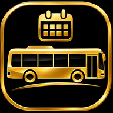

Planning Chauffeurs
Calendario compartido de conductores
Abrir calendario Para añadir el icono: menú de Chrome → Añadir a pantalla de inicio / Instalar aplicación.
Calendario compartido de conductores
Abrir calendario Para añadir el icono: menú de Chrome → Añadir a pantalla de inicio / Instalar aplicación.